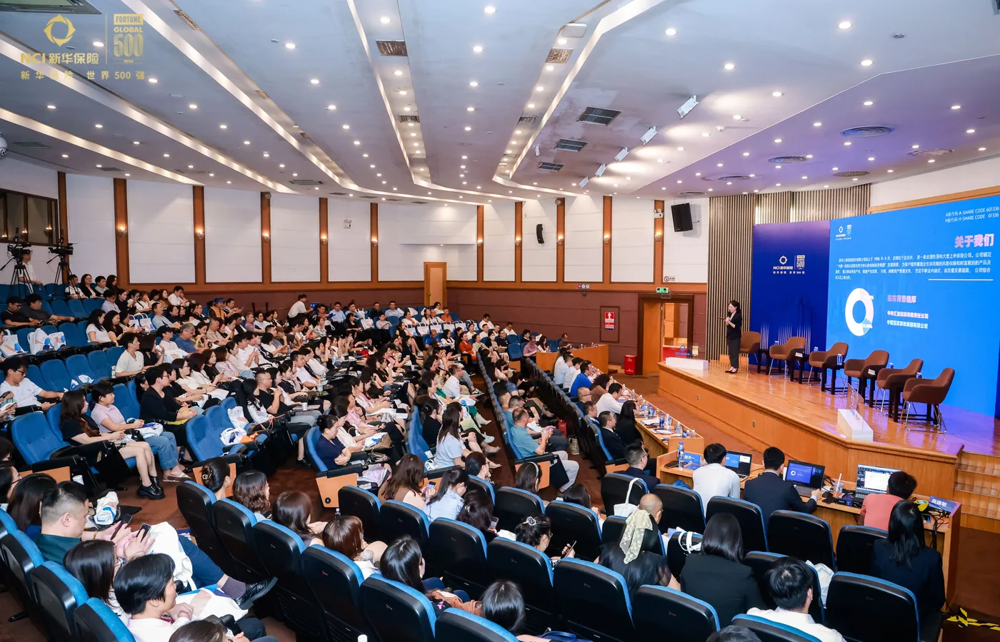
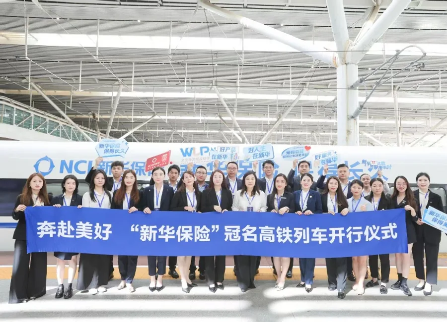
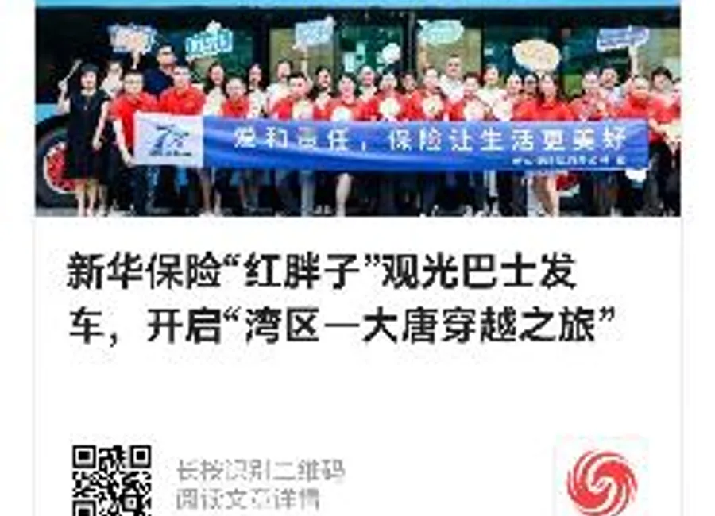

用资源整合，让内部事件获得外部声量。
承接总部高铁资源，组织打卡仪式与发布会传播，在有限投入下完成新闻点包装、媒体邀约和现场内容输出。
- 提炼事件新闻点与视觉传播素材
- 协调四家本地主流媒体到场
- 连接总部资源、会务与外部供应商
我的角色 传播统筹 · 内容包装 · 媒体公关 · 现场协同
事件 / 新闻 / 组织
承接总部高铁资源，组织打卡仪式与发布会传播，在有限投入下完成新闻点包装、媒体邀约和现场内容输出。


以少量媒体伴手礼成本，邀请深圳特区报、深圳商报、凤凰网、深圳新闻网到场；季度官微阅读量同比提升 55.4%。